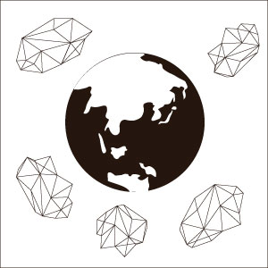
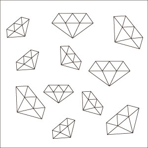
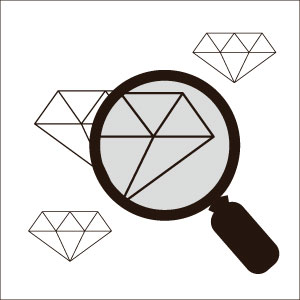
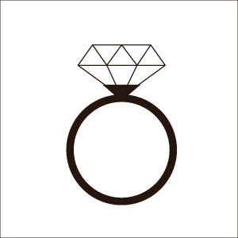
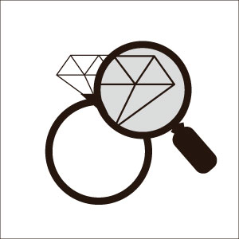

K's spilit
ケイズスピリット
コンセプト
- 「すべてのダイヤモンドには個性がある」
- 私たちは、ダイヤモンド一粒一粒の輝きに個性を見出し、その個性を最大限に引き出し発信してゆくことが、ジュエリーメーカーとしての最大のテーマであると考えます。
- 私たちは、お客様ひとりひとりを「Only One」にもてなし、ジュエリーを通して最高の幸福を与え続けることが、ジュエリーアドバイザーとしての最大の使命であると考えます。
- 私たちケイズ・インターナショナルは、ダイヤモンド一粒一粒が持つ個性と、お客様ひとりひとりが持つ個性を大切に、「世界でひとつだけの輝き」を創り出すジュエリーカンパニーです。
商品ご提供の流れ
１．原石の調達・仕入れ

- ジュエリーに使われるルース（裸石）のほとんどが、海外の鉱山から産出されます。 ケイズ・インターナショナルでは、インドを中心に、創業以来パートナーシップをとっている海外の信用のおけるサプライヤーを通じて、国際的なルールにのっとり良質なルースを仕入れます。
２．選別・選定

- 仕入れたルースは、社長自らの目で選別を行います。 ケイズ・インターナショナルのこだわりとして、同じように輝く無数のルースたちの中で、美しさだけではなくルースの個性にこだわり、魅力的に輝くルースだけを選別します。
３．鑑定

- どんなに魅力的で美しく輝くルースでも、欠けなどの欠点があれば商品としては出せません。 選別されたルースたちは、隅々まで10倍ルーペで確認をし、ジュエリーとして商品に出来るかどうか最終チェックを行います。
４．デザイン・加工

- 最終チェックをくぐりぬけたルースは、国内の熟練した職人の手で、ケイズ・インターナショナルのオリジナルジュエリーとして誕生します。 ケイズ・インターナショナルでは、そのルースの個性がさらにひき立つように、デザインや石留めにこだわり製作します。
５．検品

- 熟練した職人のもとに作り上げられた、ケイズ・インターナショナルのオリジナルジュエリーは、催事に並ぶ前に東京本社の専門のスタッフにより厳しい目で検品されます。 妥協を許さない専門スタッフの検品では、「仕上がり」から「着け心地」まで、専門的な面だけでなく、身につけるお客様の目線からも検品が行われます。
返品ポリシー
- 以下の条件全てを満たす場合に限り、交換若しくは返品を承ります。
- 条件1＞ 未使用品に限ります
- 条件2＞ 商品がお客様のお手元に到着してから8日以内に、ご購入下さった店舗にご連絡下さい
- 条件3＞ ご購入時にお渡しする領収書及び保証書も併せてご提出ください（コピーだけの場合は承ることができません）